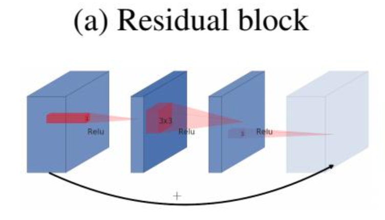
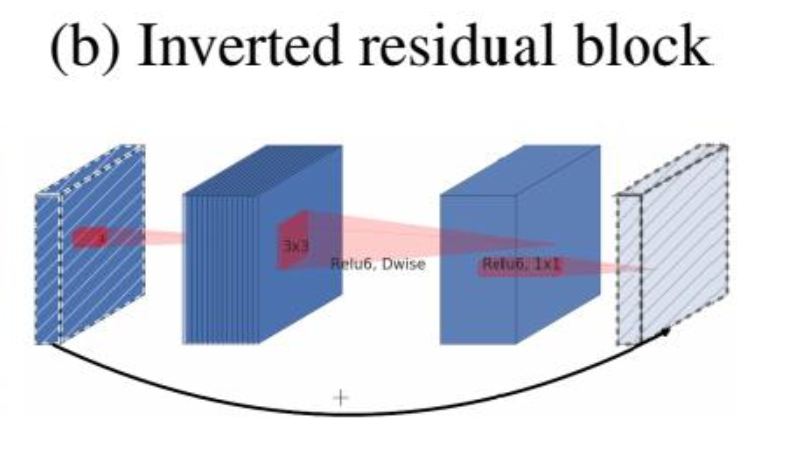
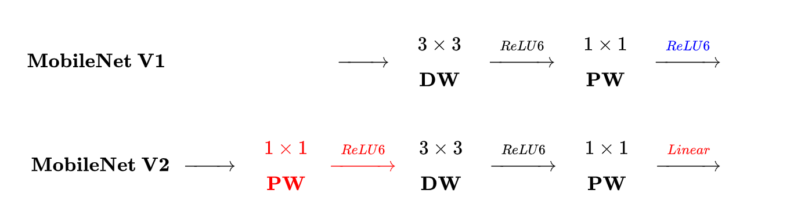
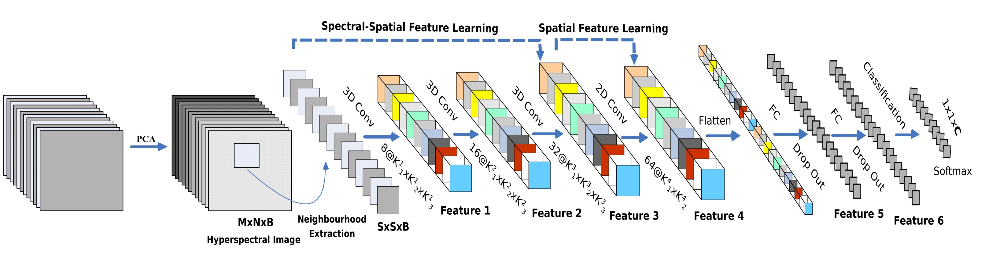
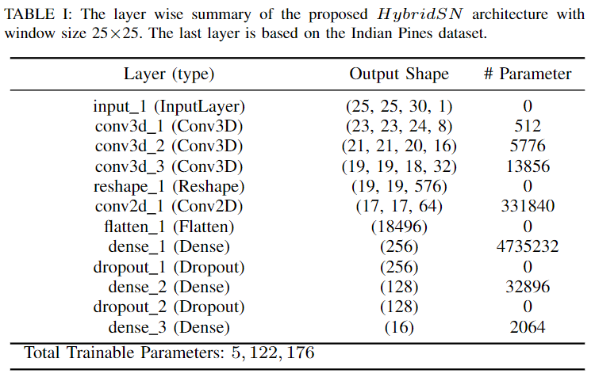
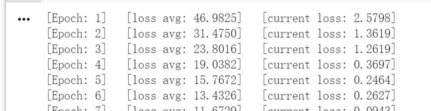
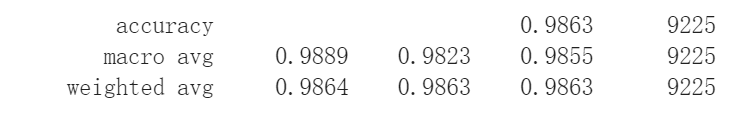
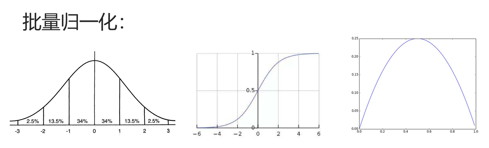
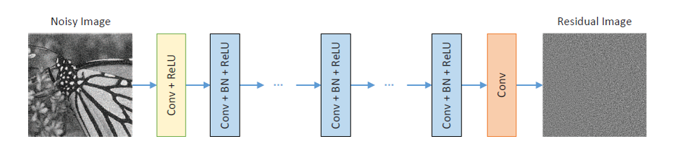
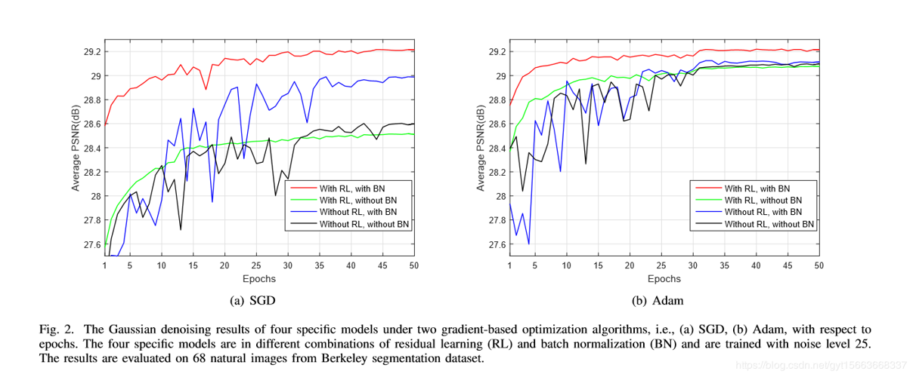

代码学习和论文阅读
学习理解MobileNetV1、MobileNetV2的代码；阅读《HybridSN: Exploring 3-D–2-DCNN Feature Hierarchy for Hyperspectral Image Classification》，并学习其代码实现，理解3D卷积和2D卷积；
阅读《Beyond a Gaussian Denoiser: Residual Learning of Deep CNN for Image Denoising》、CVPR2018的论文《Squeeze-and-Excitation Networks》以及CVPR2019的论文《Deep Supervised Cross-modal Retrieval》
MobileNetV1代码实现
关于MobileNetV1的相关学习和理解，都整理在上一篇文章里面，其核心内容就是将传统卷积拆分为Depthwise+Pointwise两部分，从而减少了参数量，并保持了网络性能。

- 假如当前输入为19x19x3
- 标准卷积：3x3x3x4（stride = 2, padding = 1），那么得到的输出为10x10x4
- 深度可分离卷积：
- 深度卷积：3x3x1x3（3个卷积核对应着输入的三个channel），得到10x10x3的中间输出
- 点卷积：1x1x3x4，得到最终输出10x10x4
- 一个标准的卷积层以大小的feature map F作为输入，然后输出一个的feature G
- 卷积核K的参数量为
- 标准卷积的计算量为
- 深度可分离卷积的计算量为
- 卷积核K的参数量为
- MobileNet使用了大量的3 × 3的深度可分解卷积核，极大地减少了计算量（1/8到1/9之间），但准确率下降的很小
1 | import torch |
MobileNetV2学习与代码实现
其主要改动包括两个地方：
Inverted residual block
- 在 ResNet中的bottleneck中，会先对输入进行一个1x1卷积操作，来进行降维，从而减少参数量，然后在进行3x3卷积等操作，所以bottleneck是两边宽中间窄

- 而在MobileNet中，通过卷积核分解，可以有效地减少参数量，因此可以在残差网络中对输入进行一个升维操作，即先用1x1卷积提升通道数，然后用Depthwise 3x3的卷积，再使用1x1的卷积降维。这样得到的block结构便成了中间宽，两边窄。（其目的就是 提升通道数，获得更多特征嘛）

Linear Bottleneck
- ReLU6 ：普通的ReLU但是限制最大输出值为 6
- 为了在移动端设备 float16/int8 的低精度的时候，也能有很好的数值分辨率。
- 作者认为激活函数在高维空间能够有效的增加非线性，而在低维空间时则会破坏特征，不如线性的效果好
- 由于在block块输出的时候使用了1x1卷积进行了降维操作， 因此按照上面的理论，降维之后就不宜再使用 ReLU6 了

1 | # 因为一些代码和v1的代码是相似或重复的，所以也就不在重复了，这里就放一些网络构建的主要代码 |
HybridSN: Exploring 3D-2D CNN Feature Hierarchy for Hyperspectral Image Classification
基础知识
- 高光谱图像分类：
- 手工设计的特征提取技术
- 基于学习的特征提取技术
- 不过仅使用 2D-CNN或3D-CNN分别存在一些缺点，阻止了这些方法在高光谱图像上获得更好的准确性
- 2D-CNN: 缺少通道关系信息，不能从光谱维度中提取出良好的区分特征图
- 3D-CNN: 模型非常复杂， 对于在许多光谱带上具有相似纹理的类，似乎单独表现较差
- 因此作者提出使用混合CNN模型 来进行高光谱图像分类
- 2D-CNN
- 输入数据与2D卷积核进行卷积，通过计算输入数据与卷积核之间的点积之和来得到特征图
- 卷积核跨越输入数据以覆盖整个空间维度
- 同时通过激活函数传递，以在模型中引入非线性
- $ v_{i,j}^{x,y} = \phi(b_{i,j} + \sum_{\tau = 1}^{d_{l - 1} }\sum_{\rho = -\gamma}^{\gamma}\sum_{\sigma = -\delta}^{\delta} w_{i,j,\tau}^{\sigma,\rho} v_{i-1,\tau}^{x+\sigma,y+\rho} ) $
- 方程表示第i层的第j个特征图中空间位置（x，y）的激活值 ，表示为$ v_{i,j}^{x,y} $ ，其中 为激活函数， 为偏差参数，为l-1层的特征图数目和第i层第j个特征图的卷积核 的深度， 是卷积核的宽度， 是卷积核的高度， 是第i层第j个特征图的权重参数值
- 3D-CNN
- 通过对三维卷积核与三维数据进行卷积来实现的
- HSI数据模型中，利用三维卷积核在输入层的多个连续频带上生成卷积层的特征图
- $ v_{i,j}^{x,y,z} = \phi(b_{i,j} + \sum_{\tau = 1}^{d_{l - 1} }\sum_{\lambda = -\eta}^{\eta}\sum_{\rho = -\gamma}^{\gamma}\sum_{\sigma = -\delta}^{\delta} w_{i,j,\tau}^{\sigma,\rho,\lambda} v_{i-1,\tau}^{x+\sigma,y+\rho,z+\lambda} ) $
- 这个方程的得来就是在二维卷积基础上得到，其中 是 沿光谱维度的卷积核深度
- 在HSI 分类问题中，会需要网络捕获与空间信息一起在多个频带中编码的频谱信息
- 虽然使用3D-CNN卷积核可以同时从HSI数据中提取光谱和空间特征，但这会增加计算复杂度。
- 为此作者提出了一种混合特征学习框架，称为HybridSN
- 它由三个3D卷积（方程2），一个2D卷积（方程1）和三个完全连接的层组成
网络结构

-
多光谱图像输入：
- $ I \in R^{M * N * D}$
- 其中 为原始输入，M、N、D分别为宽度、高度和谱带数/通道数
- 因此I中包含的每一个像素点包括D个光谱测量值，并形成一个热点标签向量$ Y \in (y_1, y_2,…,y_c)$
- C是土地覆盖类别
- 高光谱像素表现出混合的土地覆盖类别，不过也将较高的类别内变异性和类别间相似性同时引进引入了输入 中
- 为了消除频谱冗余，首先将传统的主成分分析（PCA）沿频谱带应用于原始HSI数据
- PCA减少了从D到B的光谱带数量，同时保持了相同的空间尺寸 ， 保留了空间信息
- $ X \in R^{M * N * B}$ 表示 PCA简化的数据立方体
- $ I \in R^{M * N * D}$
-
- 3D neighboring patches
- 为了利用图像分类技术，将HSI数据立方体划分为重叠的三维小块，其中的真值标签由重叠像素的标签决定
- 即从 X 中获取neighboring patche $ P \in R^{SSB}$ ， 以空间位置 $ (\alpha , \beta)$ 为中心
- 因此从 X 中，一共可以生成 $ (M-S+1) * (N-S+1) $ 个neighboring patches
- 也就是说，一个neighboring patche $ P_{(\alpha , \beta)} $ 其覆盖了 $ \alpha -(S-1)/2$ 到 $ \alpha +(S-1)/2$ 的宽度； $ \beta -(S-1)/2$ 到 $ \beta +(S-1)/2$ 的高度
-

-
混合特征学习框架，称为HybridSN ：由三个3D卷积（方程2），一个2D卷积（方程1）和三个完全连接的层组成
-
在数据进入全连接层之前， 还会进行一个flatten操作，即把多维的输入一维化（ 常用在从卷积层到全连接层的过渡 ）
代码实现
因为代码比较多，所以我都放在我的Github上了，链接
所以这里只放一下实现的网络模块部分代码
1 | class_num = 16 |
改进
- 原始网络的准确率能达到93%左右
- 引入批归一化处理（Batch Normalization）
- 网络会很快的收敛，并且准确率也有明显的提升

- 准确率能提高到98%左右
- 数据量过少
- 在该网络训练中，由于训练数据较少，所以并不太可能会出现过拟合现象，所以这里尝试把dropout设置为0.1，测试一下网络的性能和准确率
- 网络的准确率略有提升

Beyond a Gaussian Denoiser: Residual Learning of Deep CNN for Image Denoising
- 作者提出了一种feed-forward denoising convolutional neural networks–前馈去噪卷积神经网络，称之为DnCNN
- 其将深层的网络结构、学习算法和正则化方法使用到图像去噪的过程中
- 使用了残差学习和批量归一化，对于整个网络的训练过程和去噪性能提升显著
- 与传统的去噪网络相比，DnCNNs可以处理具有未知噪声水平的高斯去噪（即进行盲高斯去噪）
- 其主要工作:
- 提出了一种高斯去噪的端到端可训练的深层次的CNN。与现有的基于深度神经网络的直接估计原始图像的方法不同，网络采用残差学习策略从噪声观察中去除原始图像
- 残差学习和批量归一化可以极大地有利于CNN学习，不仅可以加速训练，还可以提高去噪性能
- DnCNN可以轻松扩展，以处理一般的图像去噪任务：高斯盲去噪，SISR 和 JPEG图像去块
- 不过网络的输出并不是直接得到干净的原始图像x，而是残差图像v，也就是噪声观察y和原始干净图像x之间的差异，即通过隐藏层中的操作隐含去除了原始图像。
图像噪声
- 图像去噪的目的在一个遵循图像退化的模型 y = x + v中，让网络能够从噪声观察 y 中恢复原始数据 x
- 其中x就是原始不包含噪声的图像
- 通过人为的制造或者随机获得噪声信息v
- 设置不同的噪声水平，得到的噪声图像也会不同
- 将两者进行叠加，得到噪声图像y
贝叶斯观点
- when the likelihood is known, the image prior modeling will play a central role in image denoising
- 所以在实验之前能够预先得到一个噪声水平，那么训练得到对应噪声水平的网络，这对图像去噪是十分重要的
- 不过这样的先验模型也存在一定的缺点
- •在测试阶段通常涉及复杂的优化问题，使去噪过程时非常耗时
- •模型通常是非凸的并且涉及几个手动选择的参数
- •针对特定水平的噪音训练特定的模型，因此在盲图像去噪上会受到限制
残差学习
- CNN的残差学习最初被提出用于解决性能退化问题，即训练精度随着网络深度的增加而降低
- 通过假设残差映射 f(x) - x 比原始映射 f(x) 更容易学习，残差网络便很好的学习到了我们需要的残差映射，从而训练深层次的CNN并且提高用于图像分类和对象检测的准确性
- 这一部分也是在上一篇有记录，这里就不在记录了
批量归一化
-
小批量随机梯度下降（SGD）已被广泛用于训练CNN模型
-
不过其内部协变量移位大大降低了其训练效率，即训练期间内部非线性输入的分布的改变
-
批量归一化：通过在每层中的非线性之前引入归一化步骤和缩放和移位步骤来减轻内部协变量偏移。并且仅新引入了两个参数，同时可以使用反向传播更新它们
-

-
均值为0，方差为1的标准正态分布、sigmoid函数及其导数分布
- 假设某个隐层神经元原先的激活输入x取值符合标准正态分布，那么也就是说95%的概率x其值落在了[-2,2]的范围内
- 对应在sigmoid函数里面，sigmoid（x）取值大概在[0.1,0.9]之间，那么其导数取值就会在【0.05，0.25】之间吧
- 虽然只是一个大概，不过基本可以知道，如果我们每一个隐层的输入，都趋近于正态分布，那么便能够避免梯度消失问题
-
“对于每个隐层神经元，把逐渐向非线性函数映射后向取值区间极限饱和区靠拢的输入分布强制拉回到均值为0方差为1的比较标准的正态分布，使得非线性变换函数的输入值落入对输入比较敏感的区域，以此避免梯度消失问题。”
网络模型
整体上采用了VGG网络结构，并加以修改
- 将卷积滤波器的大小设置为3x3，并去除了所有的池化层
- 对于DnCNN网络，网络层数是d的时候，网络的感受野就是（2d+1) * (2d+1)，即DnCNN的感受野与网络深度d相关。所以作者参考主流的几个去噪算法，根据2d+1=effective patch size，反向推出DnCNN一个合适的网络深度
- “It is interesting to verify whether DnCNN with the receptive field size similar to EPLL can compete against the leading denoising methods.”
- 因此作者采用了和EPLL网络一样的感受野大小（35x35），因此网络深度也设置为17
- 对于其他一般图像去噪任务，我们采用更大的感受野并将深度设置为20

- 网络层结构：
- Conv+ReLU(第一层):使用64个大小为3x3xc（图像channel）的滤波器被用于生成64个特征图
- Conv+BN+ReLU:对应于层2-(D-1)，使用64个大小3x3x64的滤波器，并且将批量归一化加在卷积和ReLU之间
- 对应于最后一层，c个大小为3x3x64的滤波器被用于重建输出
- 整合残差学习和批量归一化进行图像去噪 ：
- 主要观点：当原始映射更像识别映射时，那么使用残差映射将更容易优化
- DnCNN网络可用于训练原始映射F(y)以预测x或残差映射R(y)以预测v。不过F(y)比R(y)更接近于识别映射，所以残差学习公式更适合于图像去噪

- 对于高斯去噪，残差学习和批量归一化很可能相互关联：
- 残差学习从批量归一化中受益。（例如减轻内部协变量偏移问题）
- 批量归一化有益于残差学习。在没有残差学习的情况下，批量归一化甚至对网络收敛（蓝线）具有一定的不利影响；同时在网络隐层中去除了原始图像，保留下来高斯噪声信息，所以与图像内容的相关性较小，也会有利于缓和内部协变量偏移问题
- 拓展到一般图像去噪：
- 现有的判别式高斯去噪方法在处理未知噪声水平的图像时：首先估计噪声水平，然后使用训练有相应噪声水平的模型
- DnCNN：在训练阶段，我们使用来自各种噪声水平的噪声图像来训练单个DnCNN模型（对噪声图像进行去噪而不估计其噪声水平）。最终依然可以得到十分优异的去噪结果
SENet: Squeeze-and-Excitation Networks
暂时还没看，等看完再写
Deep Supervised Cross-modal Retrieval
暂时还没看，等看完再写